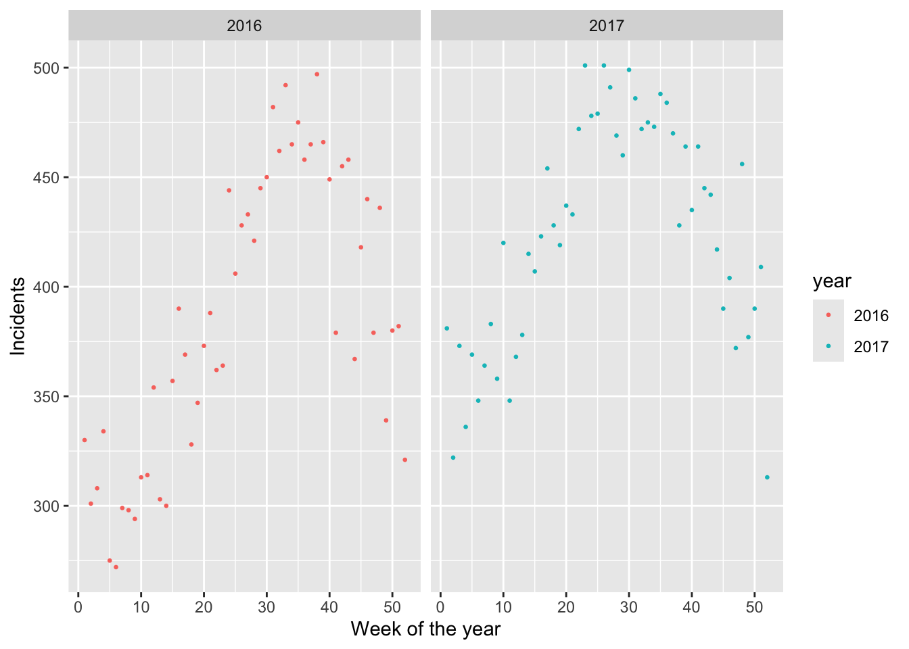

Understand how a KNN model works for prediction problems
Become familiar with the steps used in {tidymodels} to fit and evaluate a model.
Recognize the need for using separate training and testing datasets.
Data
Our dataset contains the number of reported police incidents in Minneapolis in 2016 and 2017. Let’s start by loading the dataset
##Need to upload filemn_police_tbl <-read_csv("police_weekly.mn.csv")
Rows: 104 Columns: 3
── Column specification ────────────────────────────────────────────────────────
Delimiter: ","
dbl (3): week, year, tot
ℹ Use `spec()` to retrieve the full column specification for this data.
ℹ Specify the column types or set `show_col_types = FALSE` to quiet this message.
Our dataset only has three variables:
week: Week in the year, e.g. 1,2,…,52.
year: Year, our dataset only has years 2016 and 2017.
tot: The number of total police incidents reported that week.
We can look at the number of incidents in different weeks across 2016 and 2017, as follows
(mn_police_plot <- mn_police_tbl |>mutate(year =as.factor(year)) |>ggplot(aes(week, tot, color = year))+geom_point(size = .5)+labs(x ="Week of the year",y ="Incidents")+facet_wrap(~year))

Your turn 1: Add a linear trend to mn_police_plot. Do you think the linear trend is a good approximation to your data?
Your turn 2: Add a trend line using geom_smooth (without specifying method) to mn_police_plot. Compare and contrast this plot with the one from the previous question. Which of the two trends better fit the data?
The prediction problem and the KNN model
We are interested in predicting the number of police incidents in a particular week of the year in Minneapolis. Since we want our model to be applicable across years we will use the following strategy:
We will divide our dataset into a training dataset and a testing dataset. We will use the year 2016 as our training and 2017 will be our testing.
We will build a model using our training dataset (2016)
We will evaluate how good our model is using our testing dataset (2017)
Creating testing/training datasets
We start by generating our training/testing datasets:
For our first prediction model we will use a “K Nearest Neighbors” (KNN) model. Prediction in a KNN model works by averaging the response variable across the \(k\) closest observations from your training dataset. Notice than in a KNN model we need to specify the value of \(k\).
Your turn 3: With your neighbor, discuss how a KNN model would work to predict the number of incidents for week 20 using \(k=3\). Use R to calculate the model prediction.
Using {tidymodels} to implement a KNN model
In the following code we will introduce how to implement a KNN model using {tidymodels}. After showing the code, We will explain in detail:
# Model trainingknn_model <-fit(knn_wflow, train_mn_police_tbl)
Let’s go into the details of how the above code works:
Library setup: First, we tell R that we will be using the {tidymodels} framework, that we would like to resolve conflicts between {tidymodels} and other libraries without having warnings and that we will be using {kknn}, a library that implements the KNN model.
Model specification: Next, we tell R to use a nearest_neighor() model (a KNN model), that we are setting our nearest-neighbor parameter to 3 and the weight function to rectangular (each observation weighs the same), that we are in the regression mode (as opposed to classification, more details on this in the upcoming classes), since we are predicting a numerical variable (tot is a number), and that we will be using the {kknn} library.
Recipe definition: We declare response variable (tot) and the explanatory variable (week) in a recipe. Notice that in R the notation y ~ x means that y is your response variable and x is your explanatory variable.
Workflow definition: We are combine our model specification and recipe into a single unit called a workflow. Our workflow will be called knn_wflow
Model training: Finally, we fit (or create) our model based on our training dataset.
Although the syntax might strike you as verbose at first, the advantage of {tidymodels} is that we use the same syntax no matter what type of model we use.
Before moving on, take a look at knn_model object and notice some of the parameters that we used:
knn_model
══ Workflow [trained] ══════════════════════════════════════════════════════════
Preprocessor: Recipe
Model: nearest_neighbor()
── Preprocessor ────────────────────────────────────────────────────────────────
0 Recipe Steps
── Model ───────────────────────────────────────────────────────────────────────
Call:
kknn::train.kknn(formula = ..y ~ ., data = data, ks = min_rows(3, data, 5), kernel = ~"rectangular")
Type of response variable: continuous
minimal mean absolute error: 26.67308
Minimal mean squared error: 1088.703
Best kernel: rectangular
Best k: 3
Evaluating our KNN model
Your turn 4: Run the following code and describe what you think augment() is doing. How many additional columns are added to test_mn_police_tbl and what do they mean? What are the type/dimensions of your output? Where in the output are themodel’s predictions? Check the documentation for augment and double-check your answers.
Your turn 5: Use augment() on your testing dataset (test_mn_police_tbl) and create a plot illustrating the number of reports per week with your predictions superimposed. How well does your model predict the reported values in 2017?
Your turn 6: Repeat the previous exercise but use your training dataset (train_mn_police_tbl) this time. How well does your model predict the reported values in 2016? Why do you think the model is doing better for 2016?
Your turn 7: One way to measure the fit of a regression model is to calculate the Root Mean Square Error (RMSE), which can be interpreted as the standard deviation of the residuals (the difference between the model and the observed value). Notice that the RMSE has the same units as the response variable. Check the documentation for rmse() (in the console: ?rmse) and use it to calculate the RMSE of the model on the testing and training datasets. Are your results consistent with exercises 5 and 6?
Wrapping up: Leveraging {usemodels}
The steps for defining the model, creating a recipe, and creating a workflow can be onerous at times. Luckily, {usemodels} creates code templates that you can modify. To create KNN template we use the use_kknn() function, specifying the model formula (tot ~ week), the name of the training set (train_mn_police_tbl), and whether or not we are optimizing parameters (tune = FALSE).
kknn_recipe <-recipe(formula = tot ~ week, data = train_mn_police_tbl) kknn_spec <-nearest_neighbor(neighbors =3, weight_func ="rectangular") |>set_mode("regression") |>set_engine("kknn") kknn_workflow <-workflow() |>add_recipe(kknn_recipe) |>add_model(kknn_spec)
In particular, we made the following changes:
We use the new pipe symbol (|>).
We removed the pre-processing steps from the recipe (step_zv() and step_normalize) since we haven’t talked about them yet (more details in our next worksheet).
We added options for neighbors and weight_func in the model specification.
Our response variable is numerical so in the model specification we change the mode from "classification" to "regresssion"
Finally, let’s fit our model to our training and evaluate the rmse using our testing:
kknn_model <-fit (kknn_workflow, train_mn_police_tbl) #Fitting the modelaugment(kknn_model, test_mn_police_tbl) |>#Calculate rmse on testingrmse(tot, .pred)
# A tibble: 1 × 3
.metric .estimator .estimate
<chr> <chr> <dbl>
1 rmse standard 55.3